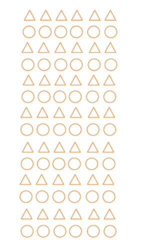

CIE Psychology / Applied Cognitive Psychology（应用认知心理学） / 涂鸦与注意
Sometimes when our minds wander, we scribble absent-mindedly. We might draw a picture or sketch a pattern, perhaps shading in the shapes while we are thinking about something else. This is called doodling （涂鸦）.
Teachers often tell learners off for doodling. We might defend ourselves by saying, "I didn't even know I was doing it." But perhaps the teacher's complaint is justified: research has shown that we perform less well when our attention （注意） is divided between tasks.
"Doodling" 不是认真画画，而是边做其他事边无意识乱画。比如你一边听课一边在笔记本边缘画小图案，这就是 doodling。很多人觉得这是不专心的表现，但 Andrade 的研究正是要挑战这个直觉——涂鸦可能反而有助于保持注意。
Doodling, even though we feel it is "unconscious", takes up some of our information-processing capacity （信息加工容量）. One possibility is that doodling takes cognitive resources away from the intended primary task （主任务） by dividing attention. If we perform a divided attention task （分配性注意任务）, doodling would therefore worsen performance.
However, divided attention is easier when the tasks are simple, well practised and automatic. For example, an experienced driver can hold a conversation while driving, but a new driver may find this difficult. In this case, driving is the primary task and talking is the concurrent task （并发任务）。
Primary task 是你主要要做的事；concurrent task 是同时发生的另一件事。如果你同时做两件事，你的 attention 就被分配了。如果两件事都很熟练（如老手开车+聊天），影响就小；如果都不熟练，表现就会下降。关键在于：当两个任务使用不同的认知资源时，它们不会互相干扰——这正是 Andrade 选择听觉主任务 + 视觉空间涂鸦任务的原因。
An alternative explanation is that doodling could improve performance by raising arousal （唤醒水平） and enhancing focused attention （集中注意） on the primary task. Doodling might aid concentration by reducing daydreaming （白日梦） so that you stay focused.
This idea is based on the working memory model （工作记忆模型） by Baddeley and Hitch. This model of short-term memory suggests that two different types of current or "working" memory can be used at the same time:
These are governed by an overall central executive （中央执行系统）。
In this model, a primary "listening" task would use the auditory part of working memory, while a concurrent "visual" task (doodling) would use the visuo-spatial part. Because they use different memory resources, they may not interfere with each other.
工作记忆模型认为人的短期记忆不是单一仓库，而是有多个"子系统"。听觉任务和视觉任务可以分别使用不同系统，因此同时进行时不一定会互相干扰。例如：一边听讲座（听觉）一边涂鸦（视觉空间），可能比一边听讲座一边做白日梦（也用听觉/认知资源）干扰更小。Andrade 选择听觉主任务 + 视觉涂鸦任务正是基于这一理论——两者使用不同的工作记忆模块，不会直接竞争同一资源。
Daydreaming is also linked to arousal. When we are bored, we are more likely to daydream. Daydreaming uses important cognitive processing resources, which can inhibit performance on tasks that use the same resources, such as attention and memory.
Alternatively, doodling may help maintain arousal by giving you something physical to do while you think. It could raise arousal to keep you awake if you are sleepy, or reduce arousal if you are agitated because you are bored. These effects would also enhance performance on the primary task.
两种相互竞争的理论：
Andrade defines doodling as the sketching of patterns and figures that are unrelated to the primary task. In the opening of the original paper, she describes a familiar scenario: the call centre has put you on hold, you start thinking about a holiday, and then you realise the person you were waiting to speak to has already started talking — you haven't taken in anything they said. This illustrates how daydreaming starts in moments of boredom and distracts attention from the task at hand.
Andrade used several strategies to increase boredom in her participants. These increased the possibility of boredom affecting the participants' attention, therefore creating a situation in which there would be a potential for doodling to affect their attention, for better or worse.
Her expectation was that the concurrent task of doodling would interfere less with overall processing than devoting a greater amount of central executive function to daydreaming. Doodling should, therefore, improve attention and thus recall should increase.
Andrade 故意让被试感到无聊，因为无聊容易引发白日梦。如果涂鸦能阻止白日梦，那么涂鸦组比不涂鸦组回忆起更多信息，就能证明涂鸦其实有助于注意。这是本研究的核心逻辑。
In Andrade's study, the primary task of listening to a message was an auditory task, whereas doodling was a visuo-spatial task. This ensured that the two tasks would not be in direct competition for one memory resource, as the working memory model suggests that the visuo-spatial and auditory modules can be used at the same time.
Doodling, such as shading in all the Os in "psychology" on a worksheet, is a common activity. Andrade was interested to know whether this activity assisted information processing. This could happen because doodling enables people to attend more effectively, or it could enhance their memory.
Andrade noted that this was the first experimental test of the prediction that doodling aids concentration. She chose an auditory primary task so that doodling (a visuo-spatial task) would compete minimally for modality-specific resources.
This was a laboratory experiment （实验室实验）. The environment was not the normal place in which people would respond to telephone messages, but the situation was controlled. The design was independent measures （独立测量设计） because participants were either in the control group （控制组） or in the doodling group. Participants were randomly assigned （随机分配） to one of the two conditions.
Laboratory experiment 意味着研究者在控制条件下做实验，而不是真实生活中。Independent measures 意思是每个被试只参加一种条件：要么涂鸦，要么不涂鸦。这样两组被试不同，不会因为先参加一次测试而影响第二次。随机分配确保两组被试在实验前的差异尽可能小。
The participants were 40 members of a participant panel at the UK's Medical Research Council (MRC) Applied Psychology Unit (now the Cognition and Brain Sciences Unit). The panel was made up of members of the general population aged 18–55 years, and they were paid a small honorarium （酬金） for participation.
Participants were randomly assigned to the control group (N = 20; 2 male) or the doodling group (N = 20; 3 male). The sample was mainly female. One participant in the doodling condition did not doodle and was replaced.
A mock telephone message was recorded onto audio cassette tape in a fairly monotone （单调的） voice at an average speaking rate of 227 words per minute, and played at a comfortable listening volume. The script included:
Participants in the doodling condition used a pencil to shade shapes of approximately 1 cm diameter printed on a piece of A4 paper, with 10 shapes per row and alternating rows of squares and circles. A 4.5 cm wide margin on the left-hand side allowed space for writing the target information. Control participants wrote the target information on a lined piece of paper.
Participants were recruited just after finishing an unrelated experiment (on ways of giving directions to different locations) for another researcher, and asked if they would mind spending another 5 minutes helping with research. The intention was to enhance the boredom of the task by testing people who were already thinking about going home.
Participants were tested individually in a quiet and visually dull room. All participants were given a piece of paper to use as a response sheet.

这张图就是研究里发给涂鸦组的纸张。上面印满了交替排列的方形和圆形（每行10个，直径约1cm），被试的任务就是边听录音边用铅笔把每个形状涂上颜色，左侧留了4.5cm宽的空白用来写他们记住的人名。注意：涂这些形状本身和"电话内容"没有任何关系——这就是 doodling 的本质：与主任务无关的视觉空间任务。Andrade 没有让被试自由涂鸦，而是统一用涂色任务，是为了避免被试因为画画内容而产生自我意识或怀疑研究的真实目的。
Participants were given standardised instructions:
Participants in the doodling condition were also told: "It doesn't matter how neatly or how quickly you do this — it is just something to help relieve the boredom."
研究者故意告诉被试"不需要记住内容"，这是为了让他们放松，更容易感到无聊。这同时也是一个 deception（欺骗）环节，因为接下来突然测试他们的记忆。另外，被试是在做完别的实验后被"顺便"拉来参加的，他们本来就想着回家，这进一步增加了无聊感——这是 Andrade 精心设计的。
Participants listened to the tape, which lasted 2.5 minutes, and wrote down the names as instructed. When the tape finished, the experimenter collected the response sheets, and engaged participants in conversation for 1 minute including an apology for misleading them about the memory test.
During this task, participants were expected to either doodle (the experimental group) or not doodle (the control group). This was the independent variable (IV) （自变量）。
They were told beforehand they would be tested on the names of people who were attending the party (and not the ones who were not going to be there). This was the monitoring task （监控任务）。
They also had an unexpected test on the names of places mentioned. This was the recall task （回忆任务）。
The order of these tests was counterbalanced （顺序平衡） — half the participants in each condition were asked to recall the names of party-goers first, then the places; the other half recalled the places first, then the names. These two tasks were the measures of the dependent variable (DV) （因变量） of recall.
Monitoring task 是被试知道会被测试的任务（监控已知信息）；recall task 是突如其来的测试（回忆未被告知要记住的信息）。两者都测记忆，但 monitoring 测的是有意注意，recall 测的是附带学习（incidental learning）。如果涂鸦只在 monitoring 上有优势，说明它帮助了注意；如果在两个任务上都有优势，则可能也帮助了记忆。
To operationalise （操作化） the DVs, plausible mishearings, such as "Greg" for "Craig", were counted as correct. Other names that were on the tape but were not party-goers (e.g. John) were scored as false alarms. Other words relating to people, such as "sister", were ignored.
The final memory score for monitored information (names) and incidental information (places) was the number of correct names/places minus false alarms. For the recall test, plausible mishearings had to be the same in both the monitoring and recall phases to be scored as correct.
Operationalisation 就是把一个抽象概念变成可以具体测量的指标。这里的记忆分数 = 正确回忆的数量 − 错误报警的数量，而不是简单数对了几个。这样可以更准确地衡量记忆质量，避免被试猜对了就得高分。"合理的误听"（如 Greg 听成 Craig）也算对，因为这说明被试确实听到了信息，只是拼写有误。
When you think about parts of the procedure of a study, it is helpful to consider reliability and validity:
Counterbalancing is used as a control procedure against order effects. It is mainly used in repeated measures designs, but in Andrade's study it was used to control for potential order effects caused by the two different measures of recall.
In the doodling condition, the mean number of shaded shapes on the printed sheet was 36.3, with a range of 3–110. One participant did not doodle and was replaced. No participants in the control condition doodled spontaneously.
涂鸦数量差异很大（3到110个），这说明不同被试对涂鸦任务的投入程度不同。这也是 independent measures 设计的一个潜在问题——被试变量可能影响结果。
Participants in the control group correctly wrote down a mean of 7.1 (SD = 1.1) of the eight party-goers' names during the tape; five people made a false alarm. Participants in the doodling group correctly wrote a mean of 7.8 (SD = 0.4) names of party-goers; one person made one false alarm.
Monitoring performance (correct minus false alarms) was significantly higher in the doodling condition (mean = 7.7, SD = 0.6) than in the control condition (mean = 6.9, SD = 1.3), Mann–Whitney U = 124, p = 0.01 (one-tailed).
研究者使用了 非参数检验（Mann-Whitney U test）而非 t 检验，因为数据不是正态分布——很多被试得了满分（8分），导致分布偏斜。15个涂鸦者和9个控制组被试得了满分8分。one-tailed（单尾检验）是因为 Andrade 有明确的方向性预测：涂鸦会改善（而非恶化）表现。
| Group | Measure | Control | Doodling |
|---|---|---|---|
| Names (monitored information) 人名（监控信息） |
correct | 4.3 (1.3) | 5.3 (1.4) |
| false alarms | 0.4 (0.5) | 0.3 (0.4) | |
| memory score | 4.0 (1.5) | 5.1 (1.7) | |
| Places (incidental information) 地名（附带信息） |
correct | 2.1 (0.9) | 2.6 (1.4) |
| false alarms | 0.3 (0.6) | 0.3 (0.4) | |
| memory score | 1.8 (1.2) | 2.4 (1.5) |
Overall, participants in the doodling condition recalled a mean of 7.5 pieces of information (names and places), 29% more than the mean of 5.8 recalled by the control group.
A 2 (doodling, control) × 2 (names, places) mixed measures ANOVA （方差分析） confirmed that:
Removing data from participants who had suspected a test did not alter the pattern of results (main effect of group: F(1, 31) = 6.9, p = 0.01). Entering monitoring performance as a covariate （协变量） made the group effect marginally significant, F(1, 37) = 3.8, p = 0.058.
从表中可以看出：无论是"被要求记住的名字"还是"没要求记住的地方"，涂鸦组的记忆分数都高于控制组。这说明涂鸦不仅没让人分心，反而帮助了记忆。当把监控表现作为协变量时，组间效应变得仅边缘显著（p = 0.058），这意味着涂鸦对回忆的优势可能部分来自于它在监控阶段帮助了注意——但无法完全排除涂鸦也直接帮助了记忆的可能性。
Three doodlers and four controls suspected a memory test. This suggests that there were demand characteristics （需求特征） that made the aim apparent to the participants. However, none said they actively tried to remember information. The roughly equal numbers in each condition means demand characteristics are unlikely to have biased the results.
Andrade concluded that doodling helps concentration on a primary task. Participants who performed a shape-shading task, intended as an analogue of naturalistic doodling, concentrated better on a mock telephone message than participants who listened to the message with no concurrent task. This benefit was seen for both monitoring performance and scores on a surprise memory test.
However, because the doodling group were better on both the monitored and incidental information, there are two possible explanations:
The fact that entering monitoring performance as a covariate made the group effect only marginally significant (p = 0.058) suggests that part of the doodling advantage may have been due to better attention during monitoring. However, it does not rule out a direct memory effect.
Without any measure of daydreaming, it is difficult to distinguish between these two explanations. Andrade suggested this could be addressed by:
Doodling could be a useful strategy when we have to concentrate and don't want to, for example in an important but boring lecture or when waiting to hear the faint sound of a friend's car arriving. By stopping our minds from wandering, we should be better able to focus on the primary task. This would be an application to everyday life.
From a cognitive psychology approach （认知心理学取向）, the study uses the working memory model to explain why doodling may help. It also raises questions about whether internal processes like daydreaming can be measured reliably.
Andrade also noted implications for research methods （研究方法）: dual task designs are commonly used to pinpoint specific cognitive resources, but they fail to do this accurately if the effects of boredom are overlooked. Performance decrements through competition for task-specific resources may be moderated if the secondary task also reduces mind-wandering. This means researchers need to consider boredom and daydreaming as hidden variables in single-task control conditions.
Cognitive psychology often uses a rigorous scientific approach in its studies. Working with another person, think separately about whether this approach can really tell us about:
These three questions are central to many aspects of psychology, and it may be useful to remember them as the 'A, B, C' of psychology:
Andrade's study tested whether doodling could improve concentration on and memory of a conversation. Participants in the doodling condition remembered more of the people's names they had been asked to recall and attended to the message better, as they recalled more in a surprise test of the place names mentioned. Overall, doodlers recalled 29% more information than controls.
This laboratory experiment was well controlled with a recorded stimulus message and specific shapes to colour in for the doodlers. The data from the words recalled was quantitative and objective. However, it would also have been useful to have had qualitative data about whether the participants daydreamed, as this would have helped to distinguish between two possible reasons for the improved memory: deeper processing or better attention.
| Term | Definition |
|---|---|
| primary task （主任务） | The activity we are supposed to be concentrating on, even though we may be doing something else as well, such as doodling. |
| attention （注意） | The concentration of mental effort on a particular stimulus. It may be focused or divided. |
| divided attention （分配性注意） | The ability to split mental effort between two or more simultaneous tasks (called "dual tasks"), for example driving a car and talking to a passenger. |
| concurrent task （并发任务） | An additional activity with a cognitive demand that we can perform at the same time as a main (primary) task. |
| focused attention （集中注意） | The picking out of a particular input from a mass of information, such as many items presented together, or a rapid succession of individual items. |
| daydreaming （白日梦） | A mildly altered state of consciousness in which we experience a sense of being "lost in our thoughts", typically positive ones, and a detachment from our environment. |
| arousal （唤醒） | The extent to which we are alert, for example responsive to external sensory stimuli. It has physiological and psychological components and is mediated by the nervous system and hormones. |
| working memory model （工作记忆模型） | A model of short-term memory that includes separate stores for visual and auditory information, controlled by a central executive. |
| central executive （中央执行系统） | The component of working memory that controls attention and coordinates the subsystems. |
| control group （控制组） | A group of participants often used in an experiment, who do not receive the manipulation of the independent variable and can be used for comparison with the experimental group. |
| experimental group （实验组） | The group that receives the manipulation of the independent variable. |
| independent measures design （独立测量设计） | An experimental design where different participants are used in each condition. |
| counterbalanced （顺序平衡） | A control procedure used to reduce order effects by varying the order in which tasks are presented. |
| independent variable (IV) （自变量） | The variable that is manipulated by the experimenter. |
| dependent variable (DV) （因变量） | The variable that is measured by the experimenter. |
| operationalisation （操作化） | Defining a variable in terms of how it is measured in a study. |
| monitoring task （监控任务） | A task in which participants are asked to pay attention to specific target information. |
| recall task （回忆任务） | A task in which participants are asked to remember information they were not necessarily told to remember. |
| false alarm （虚报） | Reporting something as correct when it is not. |
| demand characteristics （需求特征） | Features of a study that give participants clues about what the researcher is expecting, which may influence their behaviour. |
| participant variables （被试变量） | Differences between participants that could affect the results of a study, such as age, gender, or ability. |
| standardised （标准化） | Using the same procedure for all participants so that comparisons are fair. |
| informed consent （知情同意） | Participants agreeing to take part in a study after being given information about it. |
| deception （欺骗） | When participants are not told the true aim of the study. |
| debriefing （事后解释） | Explaining the true purpose of the study after it has finished. |
| quantitative data （定量数据） | Numerical data that can be analysed statistically. |
| ecological validity （生态效度） | The extent to which findings can be generalised to real-life settings. |
| covariate （协变量） | A variable that the researcher controls for in order to clarify the relationship between the IV and DV. |
| ANOVA （方差分析） | Analysis of Variance; a statistical test used to compare the means of two or more groups. |
The boring telephone message used in the study. Monitored names (party-goers) are shown in bold; incidental places are shown in italics.
"Hi! Are you doing anything on Saturday? I'm having a birthday party and was hoping you could come. It's not actually my birthday, it's my sister Jane's. She'll be 21. She's coming up from London for the weekend and I thought it would be a nice surprise for her. I've also invited her boyfriend William and one of her old schoolfriends, Claire, but she doesn't know that yet. Claire's husband Nigel was going to join us but he has just found out that he has to go to a meeting in Penzance that day and won't be back in time.
I thought we could have a barbecue if the weather is nice, although the way it has been so far this week, that doesn't look likely. I can't believe it has got so cold already. And the evenings are really drawing in aren't they? Anyway, there is plenty of space indoors if it rains. Did I tell you that I have redecorated the kitchen? It is mainly yellow — the wallpaper is yellow and so is the woodwork, although I thought it would be better to leave the ceiling white to make it look lighter. I've still got the old blue fittings — they are pretty battered now but I can't afford to replace them at the moment.
Do you remember Craig? I used to share a flat with him when we were both working for that bank in Gloucester. He has bought a house in Colchester now but he promises to take time off from gardening to come to Jane's party. Suzie is going to be there too. She's the person I met at the pottery class in Harlow last year. Apparently she has got really good at it and may even be having an exhibition of her work soon.
Will you be able to bring some food? Maybe crisps or peanuts, something along those lines. Jenny from next door is going to bring a quiche and I'll do some garlic bread. I found a good recipe for punch — you warm up some red wine with gin and orange juice plus cloves and cardamom and cinnamon. Add some brown sugar if it's not sweet enough.
The boys from the house down the road have promised to bring some of their homebrew. There are three of them sharing that house now — John, Tony and Phil. I think they were all at college together. Phil teaches at a primary school in Ely now and the other two commute to Peterborough each day. I think they both work in the hospital there — I know Tony was training to be a nurse at one point so maybe he is qualified now. John can't come on Saturday because his parents are coming to stay for the weekend but Phil and Tony should be there. Tony has to pick their cat Ben up from the vet so he may be a bit late.
By the way, did I tell you about our holiday in Edinburgh? It was a complete disaster. We were camping and it rained constantly. We spent most of the time in museums, trying to keep dry and then, to make matters worse, Nicky got her handbag stolen. I was quite glad to get back to work after that. Anyway, hope you can make it on Saturday — let me know if you want to stay over. Bye!"
从这个脚本可以看出 Andrade 的精心设计：
这个脚本的设计让学生可以直观理解 monitored information 和 incidental information 的区别。